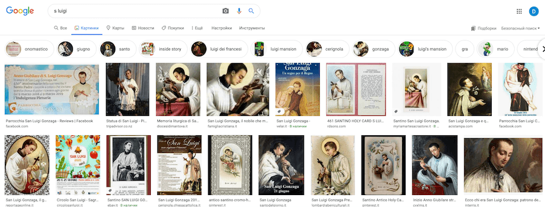
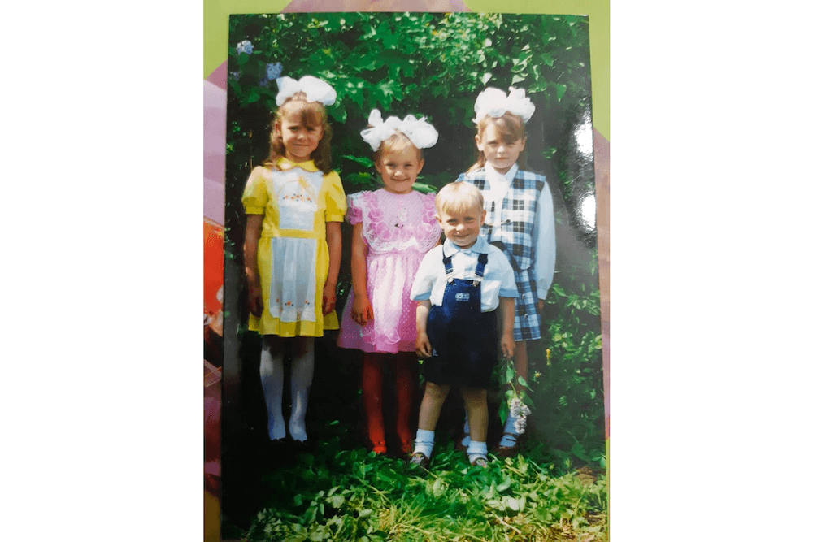
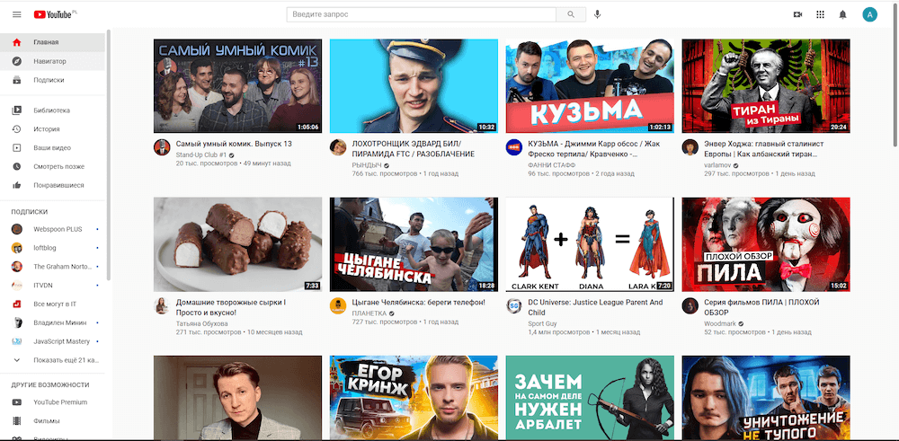
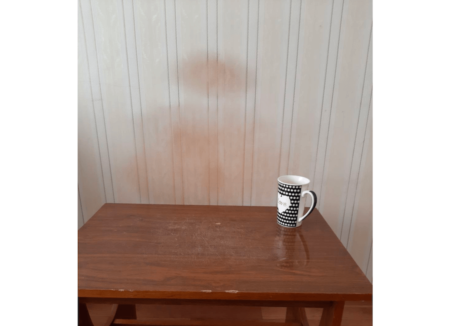
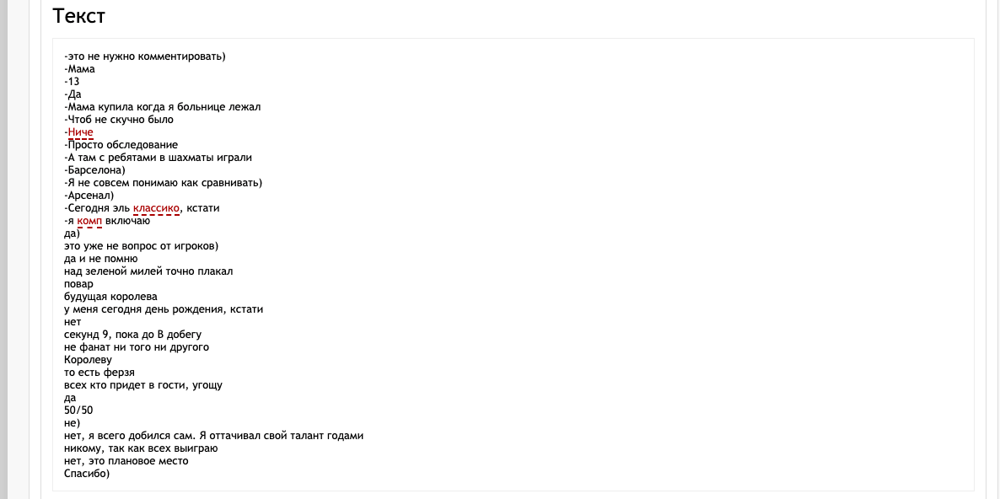
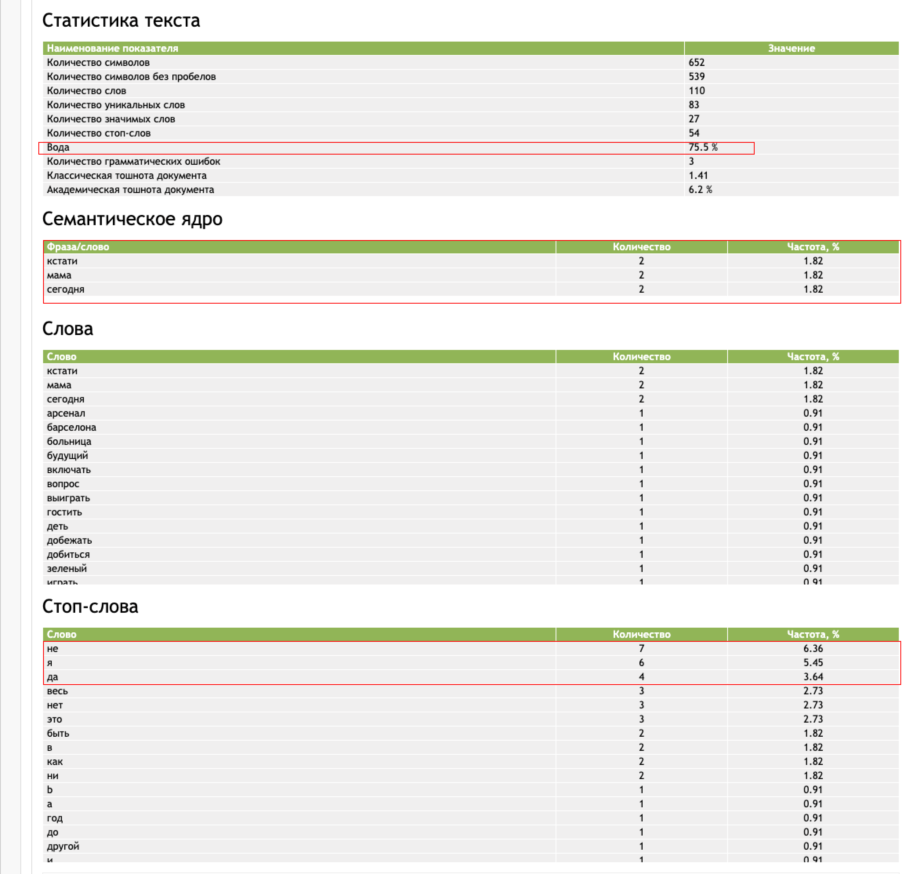

S_Luigi
10 Апреля, 2021
Имя и Фамилия: Андрей Ясинский
Место рождения: Старые Поддубы
Возраст: 27 лет
Семейное положение: Женат
Для начала я решил поискать в интеренете информацию о S_Luigi
И вот что мне удалось найти

Результаты поиска по картинкам с запросом S_Luigi
За комментарием я обратился непосредственно к Андрею
Ты можешь это как-то прокомментировать? (скидываю скрин)
-это не нужно комментировать)
У меня к тебе есть еще пару вопросов.
Кто тебе правила игры в шахматы рассказал?
-Мама
Сколько тебе было лет?
-13
т.е у тебя и доска дома была?
-Да
-Мама купила когда я больнице лежал
-Чтоб не скучно было
что случилось?
-Ниче
-Просто обследование
-А там с ребятами в шахматы играли

Здесь Андрею 5 лет, через 8 лет у него появится его первая шахматная доска
Игроки прислали в редакцию вопросы для тебя (редакция выбила вопросы у игроков)
ФК "Барселона" или ШК "QWERTY123"?
-Барселона)
Обидно, но ладно. В сравнении с Арсеналом ШК "QWERTY123" тоже проигрывает?
-Я не совсем понимаю как сравнивать)
Если бы можно было в мире оставить либо ФК Арсенал либо ШК "QWERTY123" что бы ты оставил?
-Арсенал)
-Сегодня эль классико, кстати
Эль классико будет 24-25 апреля в гранд-финале. Что бы наши читатели поняли что ты за человек - скинь скрин главной ютуба (сбрасываю свой, как пример)
(Прошло 1.5 минуты)
давай
не чисти там
-я комп включаю

Плакал ли ты когда-нибудь над фильмом?
-да)
над каким последним?
-это уже не вопрос от игроков)
-да и не помню
а над каким помнишь?
-над зеленой милей точно плакал
Cледующий вопрос
Повар спрашивает повара: какова твоя профессия?)
-повар
Что для тебя пешка?
-будущая королева
Сколько у тебя дней рождения?
-у меня сегодня день рождения, кстати
Поздравляем! Желаем что бы все твои пешки стали королевами
Знаешь ли ты какие-нибудь интересные факты про шахматы? (басни?)
-нет
Сколько времени нужно чтобы забить гвоздь?
-секунд 9, пока до B добегу
(локальный юмор)
Беларусские пельмешки или польские пироги?
-не фанат ни того ни другого
Какую из фигур нравится трогать больше всего?
-Королеву
-то есть ферзя
В случае победы испечешь торт с шахматным декором, и угостишь участников?
-всех кто придет в гости, угощу
т.е испечешь?
-да
в случае топ-3?
-50/50
АНАНИМНА! Так уж вышло, что снимаю квартиру, которую снимал Андрей. Сильно беспокоит вопрос, это ж сколько детских матов нужно получить подряд, чтобы оставить от человека только пятно! Будущие соперники, будьте осторожны с ним

Фото от автора вопроса
прокомментируешь ?
-не)
Как известно, Вы из "панского рода", а шахматы были популярны среди аристократов. Считаете ли Вы свой "шахматный талант" наследием предков?
-нет, я всего добился сам. Я оттачивал свой талант годами
Какому из игроков ты больше всего не хочешь проиграть?
-никому, так как всех выиграю
Считаешь ли ты 5-6 место в предыдущем турнире провалом?
-нет, это плановое место
Спасибо за ответы
Желаем удачи в Турнире! и еще раз с Днем Рождения!
-Спасибо)
Я прогнал ответы Андрея через анализатор текста, для наглядности.
Все ответы Андрея

Результаты анализа.
От себя хочу отметить, то с какой частотой Андрей упортребляет ")" в своих ответах
Если верить сайту Психология Отношений, то скобка в конце предложения означает, что человек сдержанно улыбается.
О сдержанности Андрея свидетельствуют и его односложные ответы. Ну что ж похоже он решил не расскрывать все карты. Удачи Андрей!